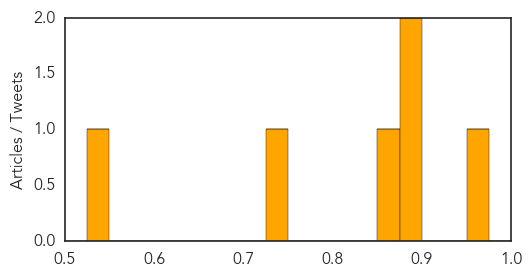
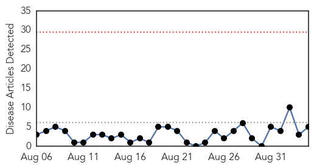
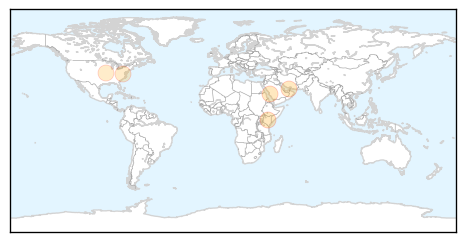
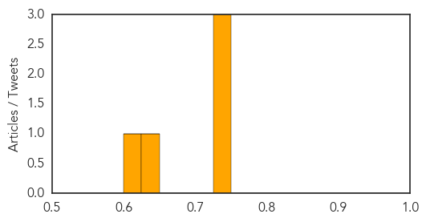

Measles
30-Day Web Trend
0 alerts, 4 warnings
30-Day Twitter Trend
0 alerts, 0 warnings

Article Locations
Article Confidences
Top Articles:
- 0.955
- Measles outbreak in DR Congo an “epidemic emergency”
- 0.898
- Measles epidemic hits DRC
- 0.876
- Democratic Republic of Congo: Katanga measles epidemic keeps worsening
- 0.851
- Measles epidemic hits DRC
- 0.749
- CDC study indicates high vaccination rates
- 0.533
- Obama Grants Immunity to CDC Whistleblower on Measles Vaccine Link to Autism
Top Tweets:
-
No tweets found for Sep 04, 2015
Hepatitis
30-Day Web Trend
0 alerts, 0 warnings

30-Day Twitter Trend
1 alerts, 0 warnings

Article Locations
Article Confidences
Top Articles:
Top Tweets:
-
No tweets found for Sep 04, 2015